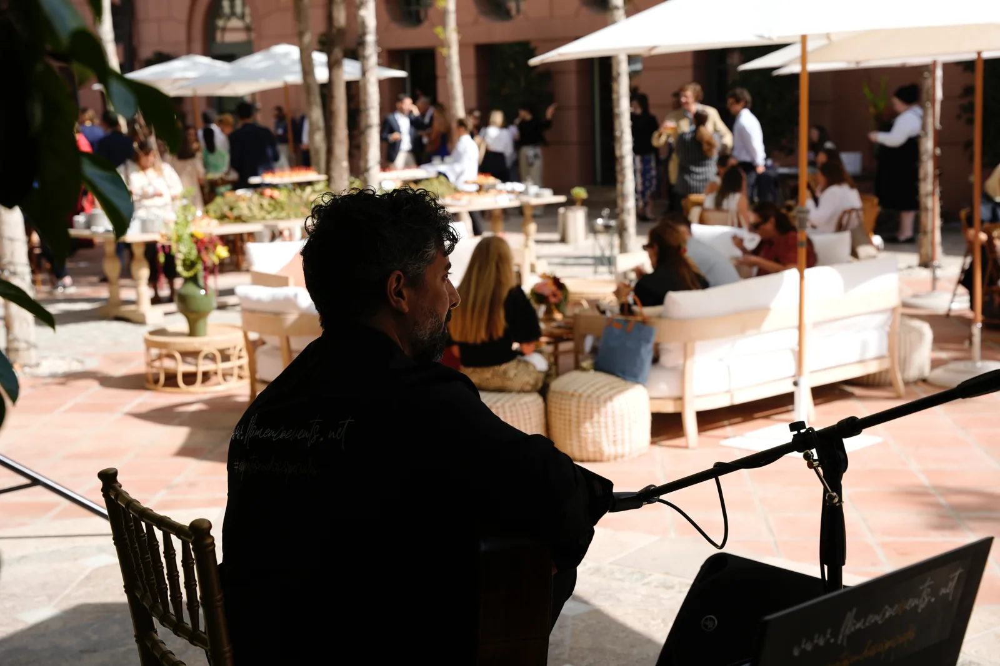
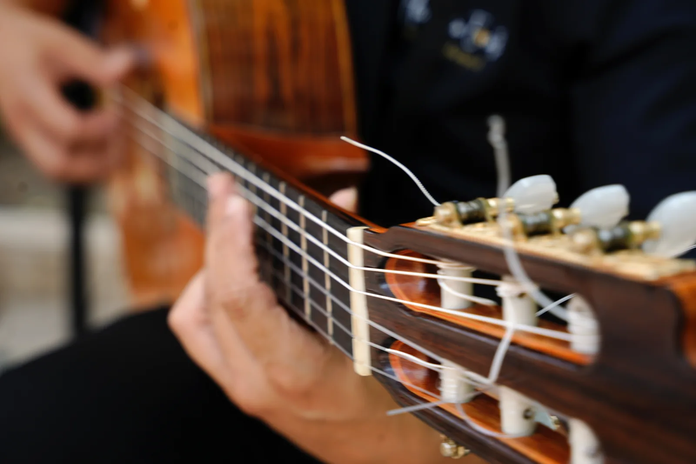

Costa del Sol · Málaga
Anantara Villa Padierna
Jardines, encuentros y música en directoLa elegancia de sus escalinatas y sus espacios abiertos acompaña una experiencia musical cercana. Del encuentro entre artistas a la guitarra que pone sonido a la celebración.




La guitarra, el cante y el baile se adaptan a cada momento para acompañar el evento con naturalidad.